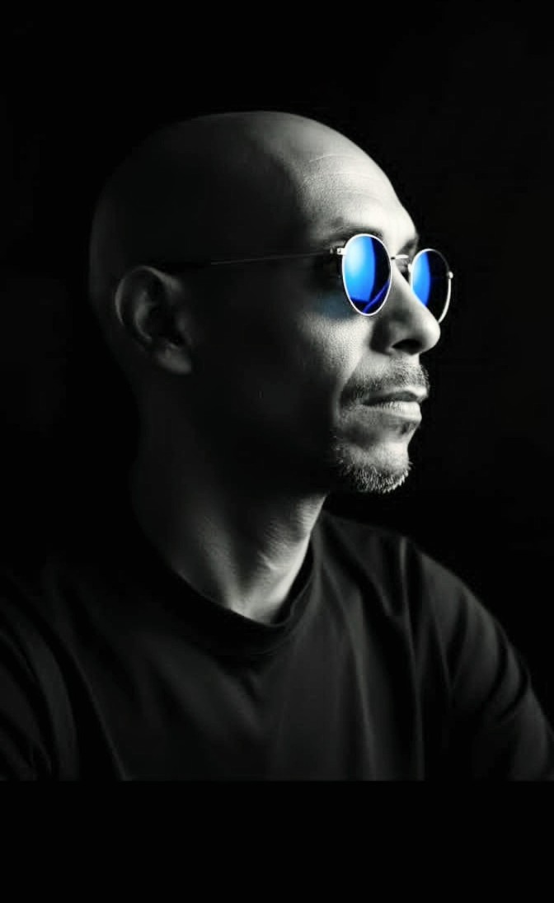
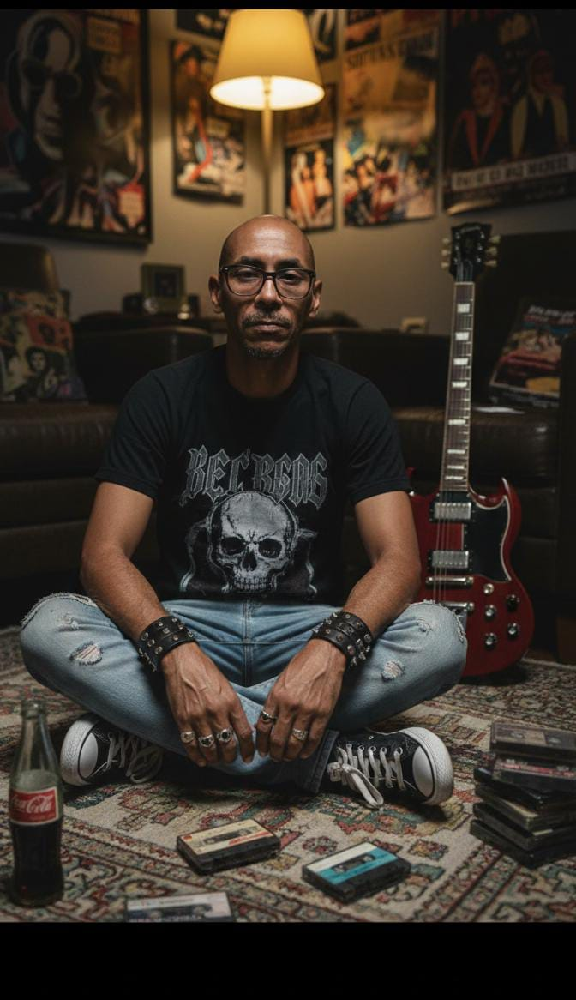

EST. 1988
QUIEN SOY
Soy un creativo digital que une programación y diseño para crear interfaces interactivas. Mi objetivo es transformar ideas complejas en soluciones funcionales y visualmente atractivas.
+30
AÑOS DE
EXPERIENCIA
EXPERIENCIA
EXPERIENCIA
MI TRAYECTORIA
Mi mundo digital comenzó en soporte técnico y se ha expandido a la programación, diseño, IT y el activismo en software libre. Movido por la curiosidad, he compartido mi experiencia en conferencias en Venezuela y en el extranjero, centrándome en crear soluciones efectivas y accesibles para todos.
He tenido la oportunidad de colaborar en diversos proyectos, desde hasta optimización de sistemas complejos, siempre manteniendo el equilibrio entre funcionalidad y diseño vanguardista.
